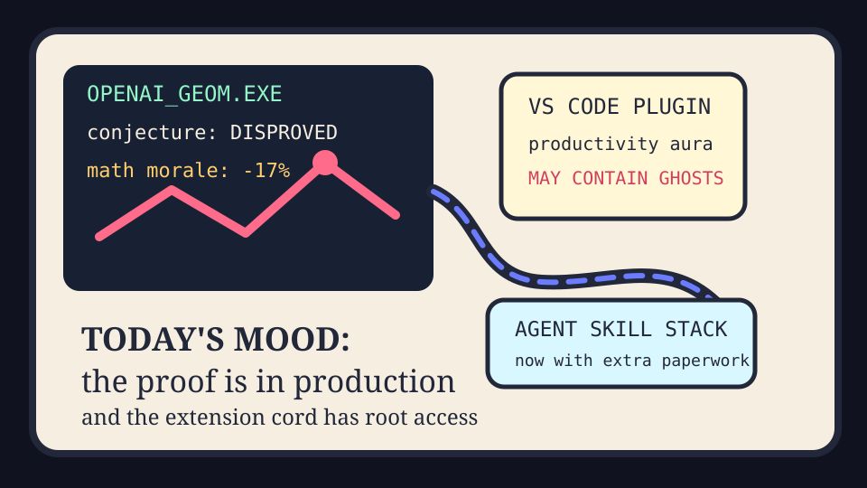

Front Page Oracle
The Mood of the Internet Today
Math got acquired by the extension cord.

2026-05-20
Today the internet believes
The internet woke up to a model disproving a discrete geometry conjecture and immediately promoted math from “homework” to “acquisition target.” The proof is not the joke. The joke is that everyone pictured a theorem quietly updating its LinkedIn.
Meanwhile, a malicious VS Code extension breach made developer tooling feel like a haunted power strip: useful, blinking, and maybe listening to your secrets. This pairs elegantly with GitHub trending repositories like codegraph, academic research skills for Claude Code, and superpowers, because the current software industry is just every intern being issued three agents and a tiny exorcist.
Hacker News also debated whether Google is declaring war on the web, which is a refined way of saying the search box has begun eating the restaurant and offering you a summary of the menu. As the oracle noted during the answer-weather incident, umbrellas are now infrastructure.
Reddit supplied the civic layer: tourists asking whether Canadian menus use American dollars, outrage over a Minecraft grandma being swatted, and the usual television-finale grief ritual. Society remains a payment terminal with feelings.
Patch Notes for Humanity
Humanity v2026.5.20
Buffs
- Discrete geometry +23% intimidation aura after being defeated by a lab coat with a GPU budget.
- Agent skill repos +18% ceremonial importance; every README now wants a staff badge.
- Canadian menu sovereignty +9% after tourists attempted cross-border currency lore.
Nerfs
- Browser trust -14%; search now answers before the web finishes introducing itself.
- Extension marketplace chill -31%; productivity plugins must now pass a ghost detector.
- Comment-section portfolio allocation -6%; rage CPI exceeded the fund’s tolerance band.
Known Bugs
- Mathematicians may receive unsolicited term sheets from people who say “agentic” too much.
- Every coding assistant still believes the safest place to store context is “somewhere dramatic.”
- Television finales continue to trigger municipal-scale grief ceremonies.
Source Trail
- Hacker News supplied OpenAI geometry, GitHub breach, Google-web war, Qwen frontier, DOS nostalgia, and SpaceX paperwork omens.
- GitHub Trending supplied agent-skill stack fever, local code graphs, and private markdown monasteries.
- Reddit r/popular supplied currency etiquette, Minecraft-grandma horror, and serialized outrage weather.